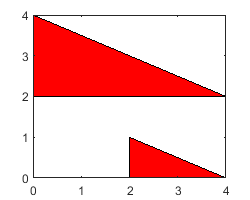
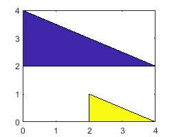
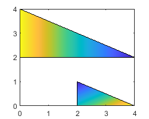
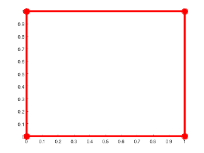
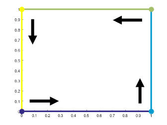
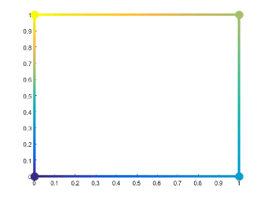

fill
Create filled 2-D patches
Description
fill(
plots filled polygonal regions as patches with vertices at the
(x,y) locations specified by X,Y,C)X
and Y.
To plot one region, specify
XandYas vectors.To plot multiple regions, specify
XandYas matrices where each column corresponds to a polygon.
C determines the fill colors for the regions.
fill(___, modifies the
patches using one or more name-value arguments to set properties. Patches can be specified
using any of the input argument combinations in previous syntaxes. For example,
Name,Value)fill(X,Y,C,'LineWidth',2) specifies a two-point border around all the
patches. For a list of properties, see Patch Properties.
fill( plots the polygonal
regions in the axes specified by ax,___)ax instead of in the current axes (gca).
The argument ax can precede any of the input argument combinations in the
previous syntaxes.
p = fill(___)Patch object or a vector of Patch objects. Use
p to query and modify properties after plotting a region. For a list of
properties, see Patch Properties.
Examples
Define the (x,y) coordinates for the vertices of the pentagon as vectors x and y. Then plot the pentagon with the specified fill color, red.
x = [0 4 5 2 1];
y = [0 0 2 4 3];
fill(x,y,'r')
Create vectors of x- and y-coordinates for a square. Specify a column vector of colormap indices, with one row for each vertex in the square. The fill function interpolates the remaining fill colors from the default colormap using the surrounding vertices.
x = [0 2 2 0]; y = [0 0 2 2]; c = [1; 0.5; 0; 0.75]; fill(x,y,c)

Define matrices x and y as the (x,y) coordinates of the vertices for two triangles, where each column corresponds to one of the triangles. Specify c as a matrix of the same dimensions as x and y. Each value in c specifies the colormap index for the corresponding vertex.
x = [0 2; 0 2; 4 4]; y = [2 0; 4 1; 2 0]; c = [1 0; 1 0; 0.3 0]; fill(x,y,c)

Specify (x,y) coordinates for the vertices of a hexagon as vectors x and y. Plot these coordinates as a hexagon. Then plot two additional translations of this hexagon on the same axes to create three partially overlapping hexagons. Specify the FaceAlpha property for each hexagon as a value less than 1 to plot semitransparent hexagons.
x = [1 3 4 3 1 0]; y = [0 0 2 4 4 2]; hold on fill(x,y,'cyan','FaceAlpha',0.3) fill(x+2,y,'magenta','FaceAlpha',0.3) fill(x+1,y+2,'yellow','FaceAlpha',0.3)

Plot a filled octagon by specifying vectors of (x,y) coordinates x and y, and an RGB triplet c. Store the resulting patch as p.
t = (1/16:1/8:1)'*2*pi; x = cos(t); y = sin(t); c = [0.8 0.7 0.8]; p = fill(x,y,c);

Use p to modify properties of the plotted octagon. Specify a thicker outline by setting the LineWidth property to 3, and change the color of the outline to a custom RGB triplet by modifying the EdgeColor property.
p.LineWidth = 3; p.EdgeColor = [0.5 0.2 0.55];

Input Arguments
x-coordinates of the patch vertices, specified as a vector or matrix.
| Number of Patches | Description | Example |
|---|---|---|
One patch | Specify | Plot one triangular patch. X = [0 0 4]; Y = [2 4 2]; C = 1; fill(X,Y,C) |
Two or more patches | Specify the shared coordinates as a vector. Specify the other coordinates as a matrix. The length of the vector must match the length of one dimension of the matrix. If the matrix is square, MATLAB® plots the columns of the matrix against the vector. | Plot two triangular patches with shared x- coordinates. X = [0 0 4]; Y = [0 -0; 2 -2; 0 0]; C = [0 1]; fill(X,Y,C) |
Two or more patches | Specify | Plot two triangular patches with unique x- and y-coordinates. X = [0 5; 0 5; 4 9]; Y = [2 0; 4 2; 2 0]; C = [0 1]; fill(X,Y,C) |
If the data does not define closed regions, then fill closes the
regions.
Data Types: single | double | int8 | int16 | int32 | int64 | uint8 | uint16 | uint32 | uint64 | categorical | datetime | duration
y-coordinates of the patch vertices, specified as a vector or matrix.
| Number of Patches | Description | Example |
|---|---|---|
One patch | Specify | Plot one triangular patch. X = [0 0 4]; Y = [2 4 2]; C = 1; fill(X,Y,C) |
Two or more patches | Specify the shared coordinates as a vector. Specify the other coordinates as a matrix. The length of the vector must match the length of one dimension of the matrix. If the matrix is square, MATLAB plots the columns of the matrix against the vector. | Plot two triangular patches with shared x- coordinates. X = [0 0 4]; Y = [0 -0; 2 -2; 0 0]; C = [0 1]; fill(X,Y,C) |
Two or more patches | Specify | Plot two triangular patches with unique x- and y-coordinates. X = [0 5; 0 5; 4 9]; Y = [2 0; 4 2; 2 0]; C = [0 1]; fill(X,Y,C) |
If the data does not define closed regions, then fill closes the
regions.
Data Types: single | double | int8 | int16 | int32 | int64 | uint8 | uint16 | uint32 | uint64 | categorical | datetime | duration
Patch colors, specified as a color name, RGB triplet, vector of colormap indices, or a matrix of colormap indices.
Color name — A color name such as
'red', or a short name such as'r'.RGB triplet — A three-element row vector whose elements specify the intensities of the red, green, and blue components of the color. The intensities must be in the range
[0,1]; for example,[0.4 0.6 0.7]. RGB triplets are useful for creating custom colors.Vector of colormap indices — A vector of numeric values that has one element for each region.
Matrix of colormap indices — A matrix of numeric values that has the same dimensions as
XandY.
The way you specify the color depends on the color scheme and whether you are plotting one polygonal region or multiple regions. This table describes the most common situations.
| Color Scheme | How to Specify the Color | Example |
|---|---|---|
| Single color for all regions |
Specify a color name or a short name from the table below, or specify one RGB triplet. | Create matrices x = [2 0; 2 0; 4 4];
y = [0 2; 1 4; 0 2];
fill(x,y,'r') |
| One color per region | Specify an n-by-1 or 1-by-n vector of colormap indices, where n is the number of polygonal regions. | Create matrices x = [2 0; 2 0; 4 4]; y = [0 2; 1 4; 0 2]; c = [1; 0]; fill(x,y,c)  |
| Interpolated face colors | Specify an m-by-n matrix of
colormap indices, where | Create matrices x = [2 0; 2 0; 4 4]; y = [0 2; 1 4; 0 2]; c = [0.5 1; 0 1; 1 0]; fill(x,y,c)  |
Color Names and RGB Triplets for Common Colors
| Color Name | Short Name | RGB Triplet | Hexadecimal Color Code | Appearance |
|---|---|---|---|---|
"red" | "r" | [1 0 0] | "#FF0000" |
|
"green" | "g" | [0 1 0] | "#00FF00" |
|
"blue" | "b" | [0 0 1] | "#0000FF" |
|
"cyan"
| "c" | [0 1 1] | "#00FFFF" |
|
"magenta" | "m" | [1 0 1] | "#FF00FF" |
|
"yellow" | "y" | [1 1 0] | "#FFFF00" |
|
"black" | "k" | [0 0 0] | "#000000" |
|
"white" | "w" | [1 1 1] | "#FFFFFF" |
|
This table lists the default color palettes for plots in the light and dark themes.
| Palette | Palette Colors |
|---|---|
Before R2025a: Most plots use these colors by default. |
|
|
|
You can get the RGB triplets and hexadecimal color codes for these palettes using the orderedcolors and rgb2hex functions. For example, get the RGB triplets for the "gem" palette and convert them to hexadecimal color codes.
RGB = orderedcolors("gem");
H = rgb2hex(RGB);Before R2023b: Get the RGB triplets using RGB =
get(groot,"FactoryAxesColorOrder").
Before R2024a: Get the hexadecimal color codes using H =
compose("#%02X%02X%02X",round(RGB*255)).
Axes to plot into, specified as an Axes or PolarAxes
object. If you do not specify the axes, then fill plots into
the current axes or creates an Axes object (Cartesian axes).
Name-Value Arguments
Specify optional pairs of arguments as
Name1=Value1,...,NameN=ValueN, where Name is
the argument name and Value is the corresponding value.
Name-value arguments must appear after other arguments, but the order of the
pairs does not matter.
Before R2021a, use commas to separate each name and value, and enclose
Name in quotes.
Example: fill(x,y,c,'FaceAlpha',.5,'LineStyle',':') creates
semitransparent polygons with dotted edges.
Note
The properties listed here are only a subset of patch properties. For a complete list, see Patch Properties.
Face color, specified as 'interp', 'flat' an RGB
triplet, a hexadecimal color code, a color name, or a short name.
To create a different color for each face, specify the CData or
FaceVertexCData property as an array containing one color per
face or one color per vertex. The colors can be interpolated from the colors of the
surrounding vertices of each face, or they can be uniform. For interpolated colors,
specify this property as 'interp'. For uniform colors, specify this
property as 'flat'. If you specify 'flat' and a
different color for each vertex, the color of the first vertex you specify determines
the face color.
To designate a single color for all of the faces, specify this property as an RGB triplet, a hexadecimal color code, a color name, or a short name.
An RGB triplet is a three-element row vector whose elements specify the intensities of the red, green, and blue components of the color. The intensities must be in the range
[0,1]; for example,[0.4 0.6 0.7].A hexadecimal color code is a character vector or a string scalar that starts with a hash symbol (
#) followed by three or six hexadecimal digits, which can range from0toF. The values are not case sensitive. Thus, the color codes'#FF8800','#ff8800','#F80', and'#f80'are equivalent.
| Color Name | Short Name | RGB Triplet | Hexadecimal Color Code | Appearance |
|---|---|---|---|---|
"red" | "r" | [1 0 0] | "#FF0000" |
|
"green" | "g" | [0 1 0] | "#00FF00" |
|
"blue" | "b" | [0 0 1] | "#0000FF" |
|
"cyan"
| "c" | [0 1 1] | "#00FFFF" |
|
"magenta" | "m" | [1 0 1] | "#FF00FF" |
|
"yellow" | "y" | [1 1 0] | "#FFFF00" |
|
"black" | "k" | [0 0 0] | "#000000" |
|
"white" | "w" | [1 1 1] | "#FFFFFF" |
|
"none" | Not applicable | Not applicable | Not applicable | No color |
This table lists the default color palettes for plots in the light and dark themes.
| Palette | Palette Colors |
|---|---|
Before R2025a: Most plots use these colors by default. |
|
|
|
You can get the RGB triplets and hexadecimal color codes for these palettes using the orderedcolors and rgb2hex functions. For example, get the RGB triplets for the "gem" palette and convert them to hexadecimal color codes.
RGB = orderedcolors("gem");
H = rgb2hex(RGB);Before R2023b: Get the RGB triplets using RGB =
get(groot,"FactoryAxesColorOrder").
Before R2024a: Get the hexadecimal color codes using H =
compose("#%02X%02X%02X",round(RGB*255)).
Edge colors, specified as one of the values in this table. The default edge color is black
with a value of [0 0 0]. If multiple polygons share an edge, then the
first polygon drawn controls the displayed edge color.
| Value | Description | Result |
|---|---|---|
RGB triplet, hexadecimal color code, or color name | Single color for all of the edges. See the following table for more details. |

|
'flat' | Different color for each edge. Use the vertex colors to set
the color of the edge that follows it. You must first specify
|

|
'interp' | Interpolated edge color. You must first specify
|

|
'none' | No edges displayed. | No edges displayed. |
RGB triplets and hexadecimal color codes are useful for specifying custom colors.
An RGB triplet is a three-element row vector whose elements specify the intensities of the red, green, and blue components of the color. The intensities must be in the range
[0,1]; for example,[0.4 0.6 0.7].A hexadecimal color code is a character vector or a string scalar that starts with a hash symbol (
#) followed by three or six hexadecimal digits, which can range from0toF. The values are not case sensitive. Thus, the color codes"#FF8800","#ff8800","#F80", and"#f80"are equivalent.
Alternatively, you can specify some common colors by name. This table lists the named color options, the equivalent RGB triplets, and hexadecimal color codes.
| Color Name | Short Name | RGB Triplet | Hexadecimal Color Code | Appearance |
|---|---|---|---|---|
"red" | "r" | [1 0 0] | "#FF0000" |
|
"green" | "g" | [0 1 0] | "#00FF00" |
|
"blue" | "b" | [0 0 1] | "#0000FF" |
|
"cyan"
| "c" | [0 1 1] | "#00FFFF" |
|
"magenta" | "m" | [1 0 1] | "#FF00FF" |
|
"yellow" | "y" | [1 1 0] | "#FFFF00" |
|
"black" | "k" | [0 0 0] | "#000000" |
|
"white" | "w" | [1 1 1] | "#FFFFFF" |
|
This table lists the default color palettes for plots in the light and dark themes.
| Palette | Palette Colors |
|---|---|
Before R2025a: Most plots use these colors by default. |
|
|
|
You can get the RGB triplets and hexadecimal color codes for these palettes using the orderedcolors and rgb2hex functions. For example, get the RGB triplets for the "gem" palette and convert them to hexadecimal color codes.
RGB = orderedcolors("gem");
H = rgb2hex(RGB);Before R2023b: Get the RGB triplets using RGB =
get(groot,"FactoryAxesColorOrder").
Before R2024a: Get the hexadecimal color codes using H =
compose("#%02X%02X%02X",round(RGB*255)).
Line style, specified as one of the options listed in this table.
| Line Style | Description | Resulting Line |
|---|---|---|
"-" | Solid line |
|
"--" | Dashed line |
|
":" | Dotted line |
|
"-." | Dash-dotted line |
|
"none" | No line | No line |
Output Arguments
Alternative Functionality
Several functions offer all of the functionality of fill as well as
additional options for plotting, manipulating, and querying polygons. Use these functions in
place of fill when appropriate:
To create regular polygons, use
nsidedpoly. This function simplifies creation of regular polygons and offers additional options for managing the position and dimensions of a plotted polygon.nsidedpolycreates apolyshapeobject, with additional options for altering the location, radius, and side length of thepolyshapeafter its creation. Apolyshapecreated withnsidedpolycan be manipulated using all properties ofpolyshapeas well as the properties exclusive tonsidedpoly.To create irregular polygons, use
polyshape. This function offers additional options for defining polygons.polyshapecreates apolyshapeobject, which has additional properties and object functions for querying and altering a polygon after its creation. For a complete list, seepolyshape.To create
Patchobjects asfilldoes, usepatch. This function offers additional options for defining both 2-D and 3-D patches by their face and vertex data.